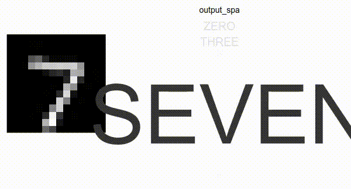
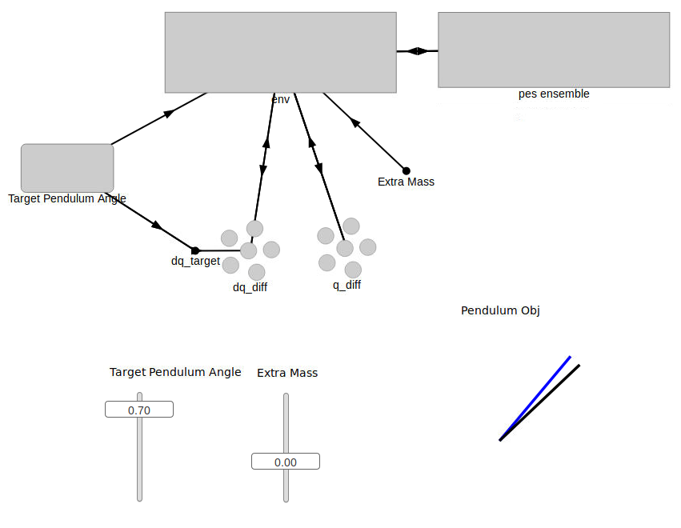
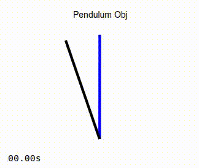
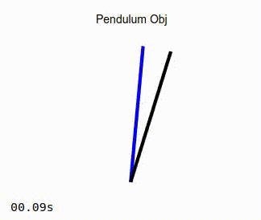
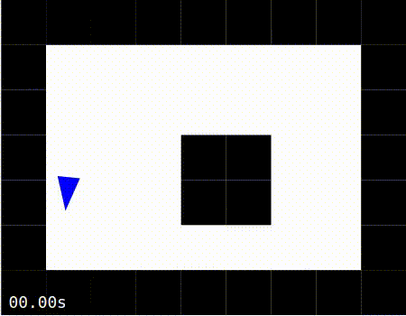
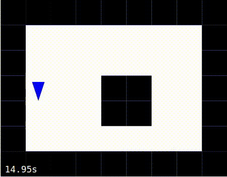
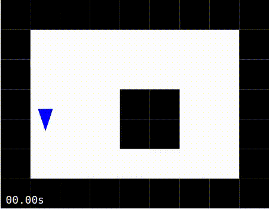

Examples¶
NengoFPGA has a few examples to show you what’s possible and get you started. There are some simple examples that are built with Jupyter notebooks that illustrate the code with interspersed text information. These notebook examples use the scripting mode of NengoFPGA without needing Nengo GUI.
There are also some more complex examples that are not built in notebooks and instead use Nengo GUI. These examples are more complex and some have opportunities for you to interact with the system via the GUI.
Notebook Examples¶
These example notebooks are statically rendered here for your perusal. If you wish to experiment with these examples yourself, you can do so by running the notebook from your own computer. See Using Jupyter Notebooks for help.
GUI Examples¶
These examples are designed to be used with Nengo GUI, so it will have to be
installed. This can be done by running pip install nengo-gui from your
command line.
Install the GUI:
pip install nengo-gui
In a terminal, navigate to the
nengo_fpga/docs/examples/guidirectory.Run one of the examples by running the command:
nengo <file name> -b nengo_fpga
where
<file name>is the filename of the example. The-b nengo_fpgaindicates to the GUI to use the NengoFPGA backend (nengo_fpga) instead of standard Nengo backend.Successfully running the
nengocommand will open the Nengo GUI interface in a web browser. On the right, you will see the code for the example Nengo model, and on the left is a graphical representation of the Nengo model.In the code for each example, somewhere near the top of the file, you should see a code block like so:
# ---------------- BOARD SELECT ----------------------- # # Change this to your desired device name board = 'de1' # ---------------- BOARD SELECT ----------------------- #
To run the code with your system configuration, change the value of the
boardvariable to the desired board defined in thefpga_configfile (i.e., the board names defined in thefpga_configfile). Refer to the NengoFPGA configuration file section for help on how to properly set up thefpga_configfile.To start the simulation of the neural model, click the play button in the bottom right of the window. Note that it may take several seconds for the model to build and start running.
MNIST Digit Classifier¶
This is an example of a one-layer vision network that is trained to classify scaled down versions of the handwritten digits from the MNIST dataset. The model takes as input the MNIST image, and produces as output the classification confidence for each one of the 10 (zero through nine) possible number classes.
This example has some additional requirements, be sure you have the following required packages installed:
Nengo Extras:
pip install nengo_extrasPython image library:
pip install pillow
To run this example in Nengo, from the nengo_fpga/docs/examples/gui directory, run:
nengo 00-mnist-vision-network.py -b nengo_fpga
Note
On the first run of the MNIST example, the python code downloads the MNIST
data set from http://deeplearning.net/data/mnist/mnist.pkl.gz into the
nengo_fpga/docs/examples/gui directory. The data set is approximately 16MB in size and may
take a while to download (depending on the speed of your internet
connection). Please do not interrupt the script while the download is
occurring.
If the download is interrupted, and the downloaded data set file
(mnist.pkl.gz) is corrupted, simply delete the mnist.pkl.gz file
from the nengo_fpga/docs/examples/gui directory and re-run the script. You may also download
the data set directly from the link above and place it in the nengo_fpga/docs/examples/gui
directory.
When the model is loaded into Nengo GUI, you should see a graphical representation similar to the image below.

In the top half of the graphical pane, you should see the high-level representation of the MNIST network. The bottom half of the graphical pane is divided into three sections:
The digit being presented to the network is shown on the left.
A visual representation (
output_spa) of the output classification of the network. The size of the text corresponds to the model’s confidence in the output classification.The numerical representation of the
output_spagraphic is shown on the right. This graph shows the model’s confidence of each number class as they relate to each other. The higher the graph line, the more confidence the model has in that one particular number class.
When the simulation is run, you should see an output like the image below.
{kind=link}
Adaptive Pendulum Control¶
This example demonstrates the use of an adaptive controller to control a weighted inverted pendulum that is affected by gravity. The controller used is the combination of a standard Proportional-Derivative (PD) controller with an adaptive neural ensemble. Together, these two components implement a Proportional-Integral-Derivative (PID) controller, where the integral term is adaptive and compensates for changing steady state error as gravity acts on the system.
To run this example in Nengo, from the nengo_fpga/docs/examples/gui directory, run:
nengo 01-adaptive-pendulum.py -b nengo_fpga
When the model is loaded into Nengo GUI, you should see a graphical representation similar to the image below.
{kind=link}
In the top half of the graphical pane, you should see the high-level representation of the MNIST network. The bottom half of the graphical pane is divided into two sections:
Two sliders on the left:
Target Pendulum Angle is the desired angle of the pendulum. The angle is defined as the amount of radians from the vertical (positive radians to the right, negative radians to the left). By default, this slider is set to automatically oscillate between 1 and -1 radians, but you are able to manually move it if desired.
Extra Mass controls the amount of additional mass added to the pendulum. The mass is defined in units of kg, and the pendulum starts with a mass of 1kg.
The pendulum visualization on the right:
The blue line represents the target, or desired position of the pendulum.
The black line is the representation of the actual position of the pendulum that is being controlled by the adaptive PID controller.
When the simulation is running, you should see the pendulum like the one in the image on the left below. Observe that as the simulation progresses, the actual position of the pendulum converges to that of the target angle. As a comparison, the image on the right below show the same pendulum controlled by a standard PD controller. It can be seen that in this case, the actual position of the pendulum never converges to the desired target angle.
| 
Adaptive Controller |

Non-adaptive Controller |
You can also try moving the Extra Mass slider up or down in the GUI and observe how the added or reduced mass affect the position of the pendulum, especially as it approaches the horizontal position where the torque due to gravity is at its peak.
Reinforcement Learning¶
This example demonstrates how an adaptive FPGA ensemble can be used to implement an agent capable of reinforcement learning. The agent can perform three actions (go forward, rotate clockwise, rotate counter-clockwise), and has a 5-point “radar” that provides it the distance to any obstacles directly ahead, directly to its sides, and on the forward diagonals.
The agent is controlled by a basal ganglia (BG) action selection system that determines which of the three actions the agent is to perform, based on the input utility values to the basal ganglia.
The radar data is fed into the adaptive FPGA ensemble to compute the BG utility values. When the simulation starts, the BG utility values start at 0.8 for moving forward, and 0.7 and 0.6 for rotating counter-clockwise and clockwise respectively. Thus, if the utility values are not modified, the agent should be biased to move in a forward direction.
A reward system is set up to give a positive value when moving forward, and no reward if the agent is stationary or has crashed into a wall. In theory, this should cause it to learn to avoid obstacles. In particular, it will start to turn before it hits the obstacle, as a continual forward movement (albeit at an angle) will provide it with a higher reward.
From the reward system, an error signal is computed. The error signal in this case is very simple: the difference between the computed utility and the instantaneous reward. This error signal should only be applied to whatever action is currently being chosen (although it isn’t quite perfect at doing this). Note that this means it cannot learn to do actions that will lead to future rewards.
The error signal is fed into the adaptive FPGA ensemble to modulate it’s, which in turn modifies the mapping between the different radar states and the learned action. In this way, the agent learns to associate specific radar states with the action that will provide it the highest reward (and hopefully avoid the walls).
To run this example in Nengo, from the nengo_fpga/docs/examples/gui directory, run:
nengo 02-RL-demo.py -b nengo_fpga
When the model is loaded into Nengo GUI, you should see a graphical representation similar to the image below.

For this example, the graphical pane is divided into four quadrants.
In the top left quadrant, the network diagram for this example is displayed.
In the bottom left quadrant, the values for the radar (
stim_radar) and the reward values associated with the agent’s current action (reward) are shown.A graphical representation of the world map, and the agent’s current location in this map is displayed in the top right quadrant. The agent is represented as a blue triangle, and the obstacles in the world with black squares. When the agent encounters an obstacle, it changes from a blue to a red colour. Also indicated is the current “learning” state of the agent – the agent is learning when Explore is ON, and conversely, is not adapting to the reward signals when Explore is OFF. If the
keyboard-statebranch of the Nengo GUI is being used, the learning mode of the agent can be controlled using keyboard presses (see below).The bottom right quadrant displays the output of the action selection network (
Thalamus), as well as the associated spike rasters for each action:actions_0: Move forwardactions_1: Turn counter-clockwiseactions_2: Turn clockwise
When the simulation is running, the agent should move around the world, as shown in the images below. The images below also show the agent moving around the world in 3 modes:
Exploring: The agent is constantly using the error signal to learn which is the best action to perform.
Exploiting: The learning has been disabled after the agent has spent about 15 seconds in the “Exploring” mode. The agent is thus moving about the world using the radar-to-action mapping it had learned in the exploration phase.
No Learning: The simulation is started with learning disabled. In this scenario, the agent moves forward, encounters a wall, and is unable to recover.
| 
Exploring |

Exploiting |

No Learning |
Changing the world layout¶
Near the top of the file, a section of code defines the layout of the world the agent is exploring. The section of code looks something like:
world_maps = ["""
#########
# #
# #
# ## #
# ## #
# #
#########""",
You can alter the default world map by changing the first entry in the
world_maps list. Obstacles are indicated with the # character, and
unobstructed space is indicated with the space character. The world map can
be increased or decreased in size by altering the number of rows and columns
that make up the map.
Controlling the simulation with the keyboard¶
You should see instructions printed in the console pane on the bottom right. These instructions will inform you on which keyboard presses can be used to disable or permanently enable learning; reset the agent’s location back to the start location; and change the world map.
If you do not see instructions for key presses then this feature is currently not available with your installed version of Nengo GUI.